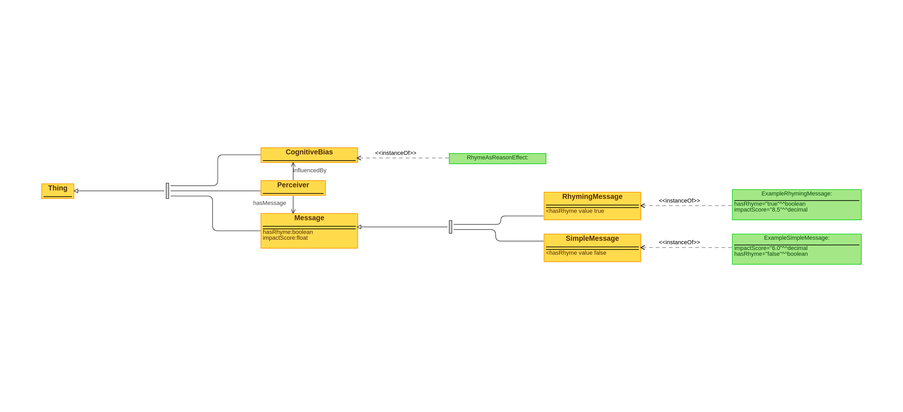

Examples of usage
The bike-shedding effect, also known as Parkinson's Law of Triviality, occurs when a group or
individual gives disproportionate weight or time to trivial issues while neglecting more
significant ones. Here are five examples:
- Corporate Meetings on Office Decor: A team spends the majority of a meeting
debating what color to paint the office bike shed, while allocating only a few minutes to
discuss critical strategic decisions that affect the future of the company. The simplicity
and relatability of the bike shed topic lead to extensive discussion, overshadowing more
complex but important topics.
- Legal Phrases: "If it doesn't fit, you must acquit." Famously used during
the O.J. Simpson
trial by his defense lawyer, Johnny Cochran, regarding a glove. The rhyming phrase was
designed to be memorable and persuasive to the jury.
- Software Development Prioritization: A software development team spends
several days arguing over the design of a minor feature's icon in a new app, such as the
color or shape, but rushes through more critical discussions on data security measures or
architectural choices that have significant long-term implications for the project.
- Government Budget Allocations: A local government council debates for hours
over a small budget allocation for a public park's new benches, while swiftly passing larger
and more impactful budget items, like infrastructure improvements or educational funding.
The tangible and straightforward nature of the park bench discussion invites more opinions
and debate, despite its relative unimportance in the broader budget.
- Home Renovation: A couple is renovating their house and needs to make
decisions on various aspects, including structural changes, plumbing, electrical work, and
interior design. They end up spending several hours debating the color of the kitchen tiles,
a relatively minor decision, while postponing critical choices related to the budget,
contractors, and timelines for the more significant aspects of the renovation. This
disproportionate focus on less important details can delay the overall project and impact
its success.
Creating an Ontology
Classes:
- Group. Represents an entity with a structured group of people
working together to meet a shared objective.
- Project. A specific initiative or program within an organization, defined
by goals, timelines, and resources.
- Meeting. A scheduled gathering of project members or organization staff to
discuss topics, make decisions, or share information related to the project.
- Task. An individual assignment or piece of work to be done as part of the
project's requirements.
- Discussion. The act of talking about something with another person or a
group of people, especially to make a decision or solve a problem.
Object Properties:
- hasProject (Organization -> Project). Links an organization to its
projects.
- hasMeeting (Project -> Meeting). Connects a project to its associated
meetings.
- hasDiscussion (Meeting -> Discussion). Associates a meeting with the
discussions that take place within it.
- comprises (Project -> Task). Indicates that a project is made up of
multiple tasks.
Data Properties:
- name (Organization, Project). The name of an organization or project.
- budget (Project). The allocated budget for a project.
- deadline (Project). The deadline by which the project or a task within the
project is to be completed.
- meetingDate (Meeting). The date on which a meeting is scheduled.
- duration (Meeting, Discussion). The length of time a meeting or discussion
lasts.
- importanceLevel (Task). A measure of a task's significance or priority
within the project.
- topic (Discussion). The subject matter being discussed in a meeting.
Axioms and Rules:
- Meetings that disproportionately focus on tasks with low importance levels are exhibiting
the Bike-shedding effect.
- The more significant the disparity between the importance of tasks and the time spent
discussing them, the stronger the indication of the Bike-shedding effect.
This ontology provides a foundation for exploring the Rhyme-as-Reason effect, allowing for the
comparison of rhyming and simple messages in terms of their perceived impact. The structure
facilitates understanding how cognitive biases can influence message reception and the
assessment of their effectiveness.
Ontology visualization
TTL code for the ontology